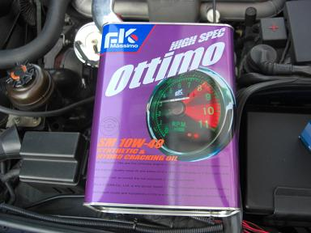
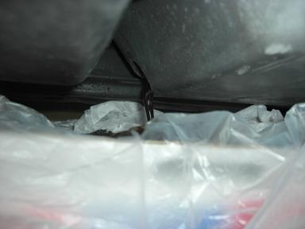
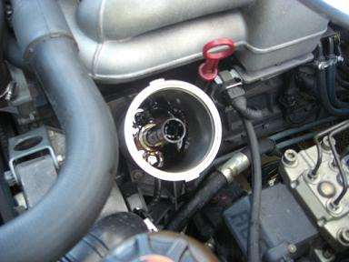
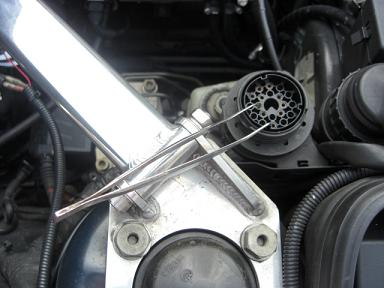

 ちょうど安売りしていたのでこれにしてみました。４L 2500円でした。 |
 17ミリのドレンボルトを緩め、古いオイルを廃油受けに抜き取ります。 |
 オイルが抜けきったところでフィルターも交換します。フィルターのキャップを外す時にオイルが垂れてしまうので、タオルを撒いておきます。 |
 ドレンを閉め新しいオイルに交換して、 朝１番の冷え切った時のアイドリングのラフさが少なくてイイかも。 |